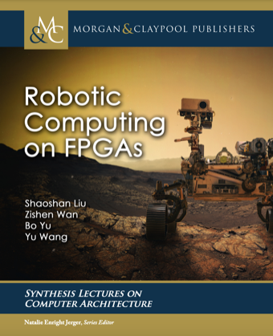
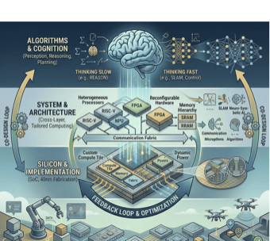
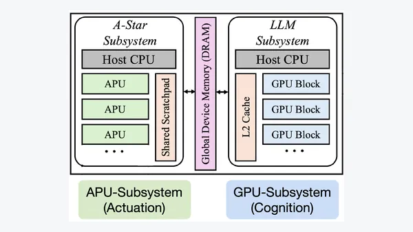
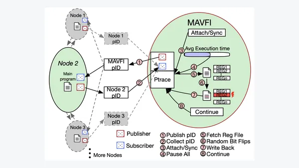
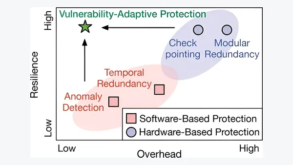
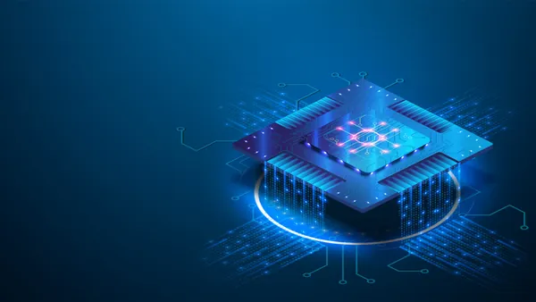
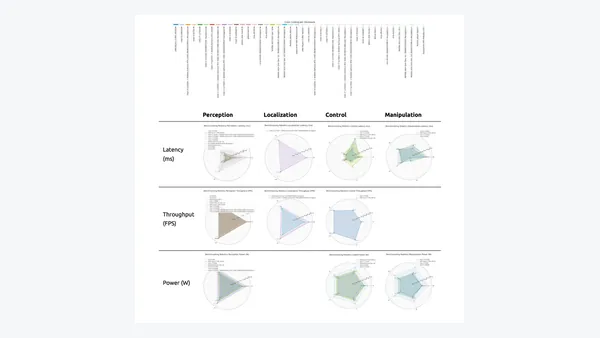
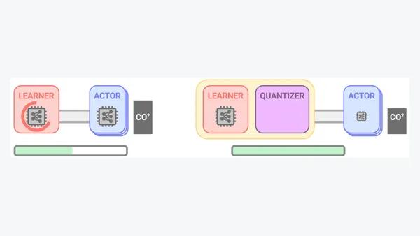

Research Direction
Computing for AI
I design systems, architectures, and chips for emerging workloads, including embodied, physical, neuro-symbolic, and agentic AI.
Assistant Professor of Computer Science · Columbia University
I am a computer architect and SoC designer working across computer architecture, systems, and VLSI design. I lead the Wan Lab, where we develop cross-layer computing systems that span software systems, hardware architecture, and silicon for emerging AI workloads, including embodied, physical, neuro-symbolic, and agentic AI. We also develop agentic AI methods for the design, optimization, and verification of computing systems.
Before joining Columbia University, I was a Postdoctoral Fellow at Harvard University, working with Prof. Vijay Janapa Reddi. I received my Ph.D. from Georgia Tech in 2025, advised by Prof. Arijit Raychowdhury and Prof. Tushar Krishna.
Selected honors. My research has been recognized with Best Paper Awards from DAC, IEEE Computer Architecture Letters (CAL), and SRC JUMP 2.0, as well as IEEE Micro Top Picks and ACM SIGDA Research Highlights. My Ph.D. dissertation received ACM SIGDA Outstanding Ph.D. Dissertation Award, ACM FCCM Outstanding Ph.D. Dissertation Award, and Georgia Tech's Colonel Oscar P. Cleaver Award. I was also awarded first place at DAC Ph.D. Forum and ACM Student Research Competition, WAIC Yunfan Award, and selected as both ML and Systems Rising Star and Cyber-Physical Systems Rising Star.
My research studies how to build computing systems for emerging intelligence and how AI can help design computing systems. These two complementary directions span computer architecture, computer systems, and VLSI design. Across both directions, I use cross-layer co-design to improve efficiency, scalability, reliability, and adaptability.
I design systems, architectures, and chips for emerging workloads, including embodied, physical, neuro-symbolic, and agentic AI.
I develop agentic AI methods for design exploration, discovery, optimization, and verification across the computing stack.

Swipe horizontally to explore the full research map
Domain-specific and adaptive architectures for embodied, neuro-symbolic, and reasoning workloads, including accelerators, memory systems, and heterogeneous platforms.
AI for Computer Architecture: Agentic design space exploration, generation, and evaluation.
Accelerators · Software-hardware co-design · Heterogeneous architecture · Memory · Dataflow
System support for emerging intelligence, including workload characterization, runtime and serving systems, hardware and software co-design, and resilience.
AI for Systems: Agentic methods for system modeling, optimization, and operation.
Agentic serving · Workload characterization · Reliability · System co-design · GPU/CPU/NPU/TPU
AI SoCs, FPGA prototypes, memory-centric architectures, and emerging-device circuits that translate system and architecture ideas into working silicon.
AI for Chip Design: Agentic methods for hardware generation, optimization, and verification.
SoCs · VLSI Design · FPGA · Non-volatile memory · Memory-centric computing · Emerging devices
Summary: Efficient Neuro-Symbolic AI Computing

An overview of FPGA accelerator design for robotic perception, localization, planning, and multi-robot collaboration. The book connects architectural techniques with deployments in autonomous vehicles and space robotics.
An open-source textbook on engineering end-to-end machine learning systems, from data and modeling to deployment, acceleration, security, reliability, and responsible AI. Developed by the Harvard Edge Computing Lab community and used in the CS249r course.

This dissertation develops a cross-layer system, architecture, and silicon co-design framework for efficient, reliable, and scalable physical intelligence. It connects neuro-symbolic reasoning and embodied AI with unified abstractions, domain-specific architectures, and working chip implementations.
A curated collection of representative papers across computer architecture, systems, chips and VLSI, and AI for computing-system design.
Google Scholar
IEEE Micro 2026

IEEE Internet Computing 2026


ISCA Architecture 2.0 Workshop 2026


ISCA MLArchSys Workshop 2026


MICRO 2026


ASPLOS 2025Industry-Academia Partnership Highlight

HPCA 2025Best Paper Award, DARPA SRC JUMP 2.0
PaperProject WebsiteSlideSlide (long version)PosterTutorialMedia


NeuS 2025Oral Presentation, Top 3%


ASPLOS 2024Best Poster Award, IBM IEEE AI Compute Symposium


TCASAI 2024Best Paper Award, DARPA SRC JUMP 2.0

ISPASS 2024Best Poster Award, DARPA SRC JUMP 2.0 CoCoSys


ICRA 2024Best Paper Award, IROS Robotics Benchmarking Workshop

DATE 2024Best Presentation Award, SRC TECHCON


MICRO 2022IEEE Micro Top Picks Honorable Mention


TMLR 2022Featured by Google AI

DAC 2021Best Presentation Award, DAC Young Fellow


DAC 2020Best Paper Award; ACM SIGDA Research Highlights Nominee

IEEE Computer Architecture Letters 2020Best Paper Award
No publications match these filters.
Selected distinctions in research, scholarship, and academic leadership.
Invited seminars and research forums, organized by talk series.
Arizona State University, Boston University, Chinese University of Hong Kong, Columbia University, Harvard University, Hong Kong University of Science and Technology, Johns Hopkins University, Mohamed bin Zayed University of Artificial Intelligence, National University of Singapore, North Carolina State University, Northeastern University, Peking University, Purdue University, Rice University, Texas A&M University, Tsinghua University, University of Colorado Boulder, University of Illinois Urbana-Champaign, University of Maryland, University of Pennsylvania, University of Southern California, and University of Texas.
Courses and lectures across computer architecture, AI systems, and hardware design.
Hardware for AI, AI for Hardware
Agentic AI for Computing Systems Design
Leadership and professional service across computer architecture, systems, and design automation.
HPCA 2026, MLSys 2026, HPCA 2025, ISCA 2024, MICRO 2023, ISCA 2023, ASPLOS 2023, MLSys 2023, MICRO 2022, ASPLOS 2022, IISWC 2022
MLBench at ASPLOS 2026, Arch4EAI at ISCA 2025, SCOPE at ICLR 2025, Lock-LLM at NeurIPS 2025, CAV at ASPLOS 2024
IEEE JSSC, IEEE TCAD, IEEE TCAS-I, IEEE TCAS-II, IEEE TBioCAS, IEEE JETCAS, IEEE Micro, IEEE Internet of Things Journal, IEEE CAL, IEEE TIM, ACM JATS, ACM TCPS
Selected coverage of research in AI systems, computer architecture, and autonomous computing.





